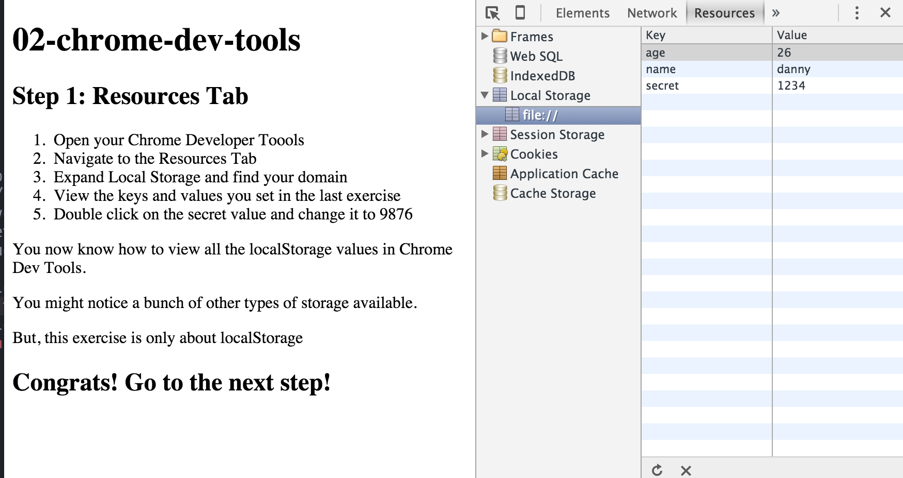

02-chrome-dev-tools

Step 1: Resources Tab
- Open your Chrome Developer Tools
- Navigate to the Resources Tab
- Expand Local Storage and find your domain
- View the keys and values you set in the last exercise
- Double click on the secret value and change it to 9876
- Type
localStorage.getItem('secret') in your console and observe the value
You now know how to view all the localStorage values in Chrome Dev Tools.
You might notice a bunch of other types of storages available.
But, this exercise is only about localStorage
Congrats! Go to the next step!